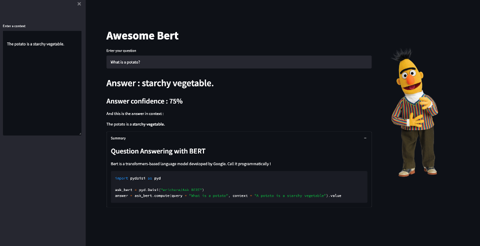

Remixing daisies¶
We have seen how to call Daisies remotely in Python with pydaisi.
Because Daisies are simply Python code, they can also call other Daisies.
This allows to rework the output of a Daisi with an other one, build workflows, orchestrations, give a Streamlit UI to a Daisi that you like, and so much more !
Daisies which call other Daisies will feature a different icon on their card.

A simple example¶
The "Ask Bert" Daisi returns data in a JSON format, which needs to be parsed to extract the answer returned by the model.
Let's build a new Daisi, which will call "Ask Bert", post process its data and return them in a different format. And we can also build a nicer UI for Bert in this new Daisi.
The code of the new Daisi simply looks like :
import pydaisi as pyd
import streamlit as st
# Call the "Ask BERT" Daisi
ask_bert = pyd.Daisi("exampledaisies/Ask BERT")
# get_answer() is an endpoint
def get_answer(context, query):
answer = ask_bert.compute(query, context).value
# Post process the "Ask BERT" Daisi return
staight_answer = answer[0]['data']['answer']
answer_proba = int(100*float(answer[0]['data']['score']))
highlighted_answer = answer[1]['data']
return staight_answer, highlighted_answer, answer_proba
Check its code here : Awesome Bert !
We can also add a nice Streamlit UI with the following simple code :
def st_ui():
st.set_page_config(layout = "wide")
st.title("Awesome Bert")
context = st.sidebar.text_area("Enter a context",
value ="The potato is a starchy vegetable.",
height = 400)
col1, col2 = st.columns(2)
with col1:
query = st.text_input("Enter your question",
value = "What is a potato?")
staight_answer,\
highlighted_answer,\
answer_proba = get_answser(context, query)
st.header("Answer : " + staight_answer)
st.subheader("Answer confidence : " + str(answer_proba) + "%")
st.write("And this is the answer in context :")
st.write(highlighted_answer, unsafe_allow_html=True)
with open("DAISI.md", "r") as f:
summary = f.read()
with st.expander("Summary", expanded = True):
st.markdown(summary)
with col2:
st.image('Bert_smile.png', width = 300)
The app is immediately deployed, with its backend powered by the "Ask BERT" Daisi.
Here below is how it renders :
